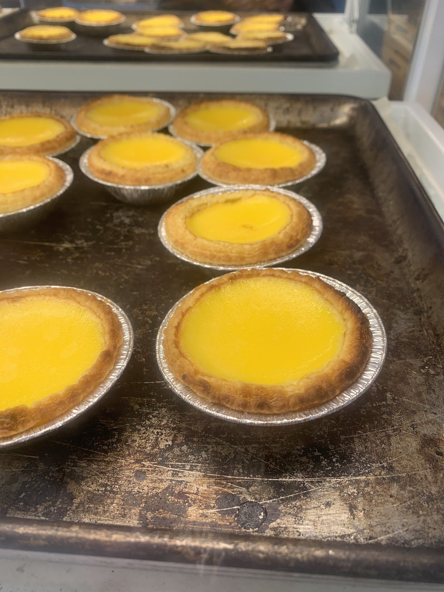
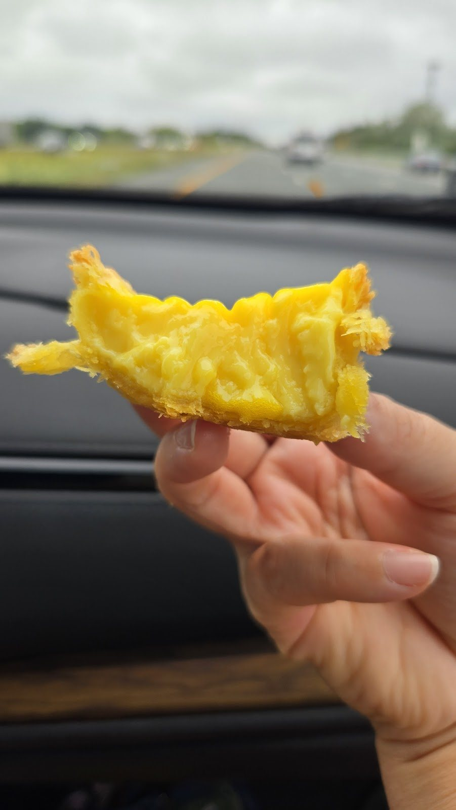
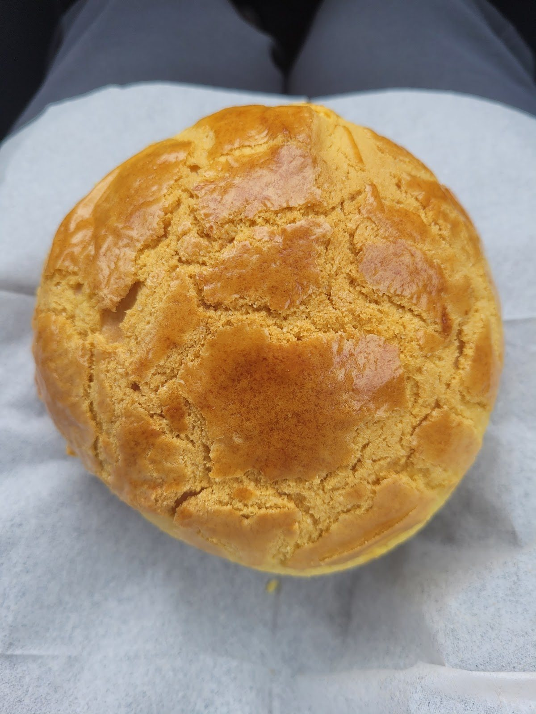
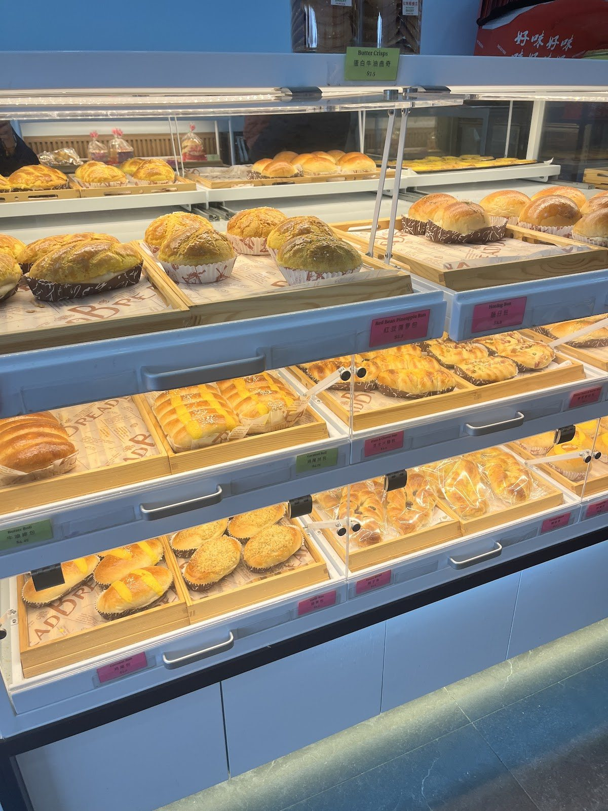
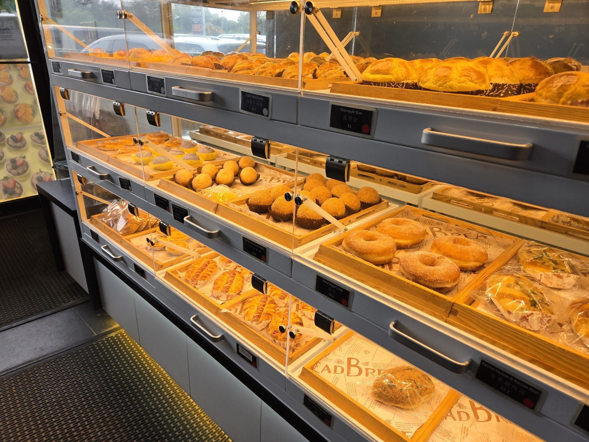
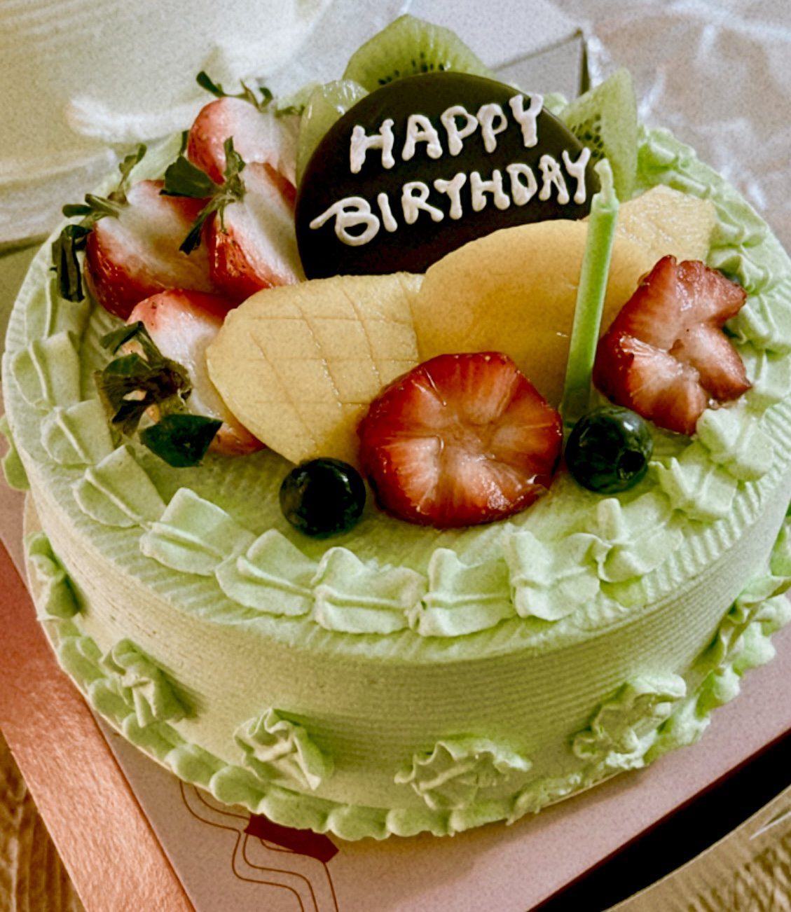
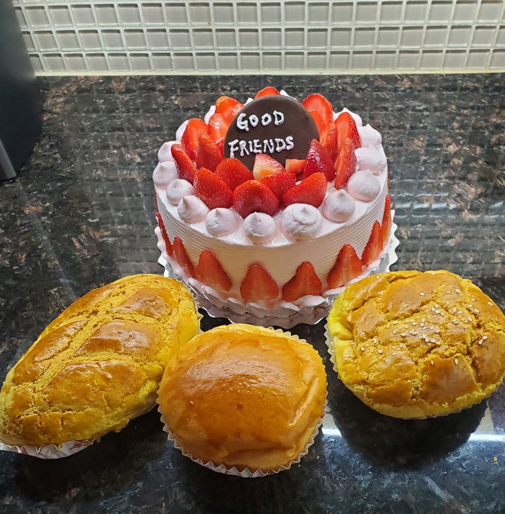
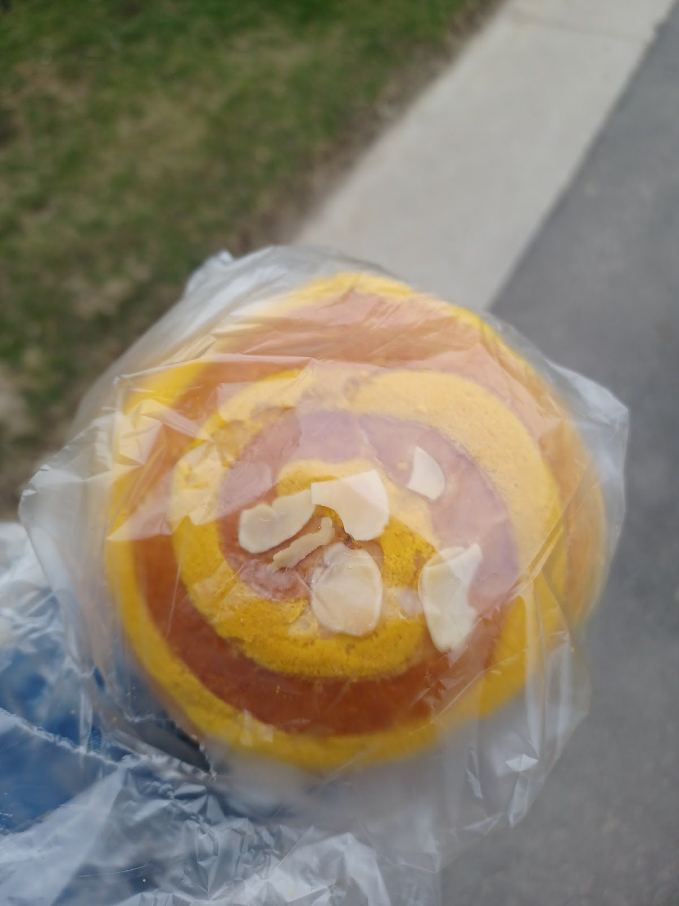
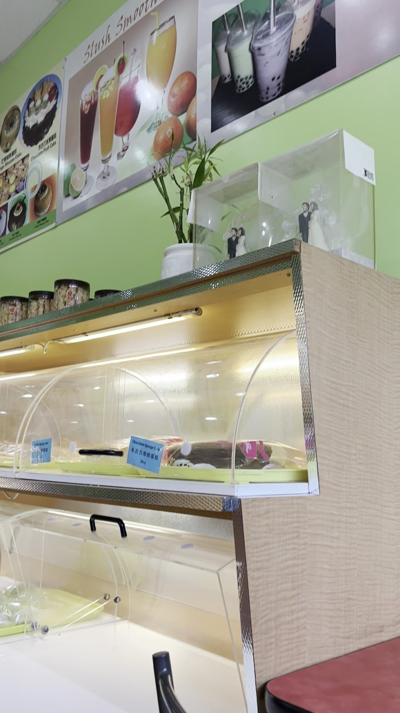
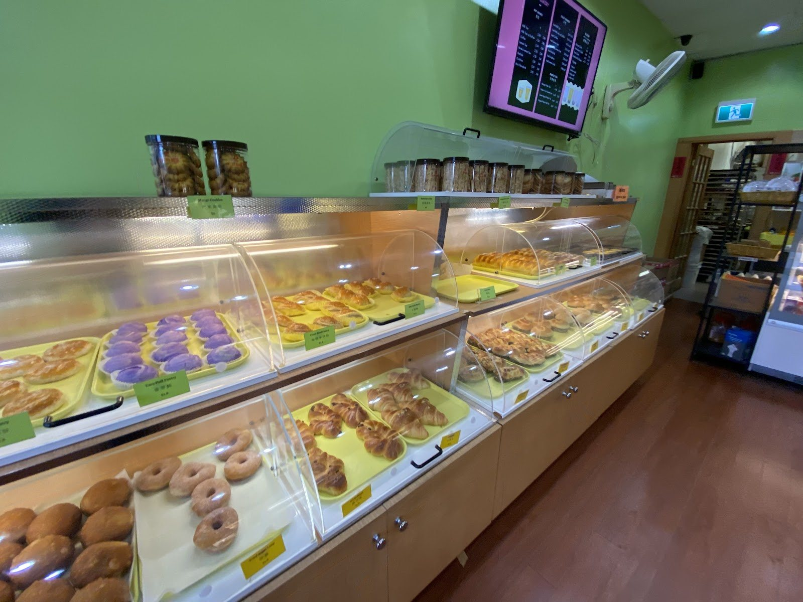

Family-run Hong Kong-style bakery · Warden Ave, Scarborough
Fresh egg tarts, golden pineapple buns & cakes worth celebrating.
Open Tuesday to Sunday, 8 a.m.–5:30 p.m. Closed Mondays.


The one people drive across town for
Egg tarts
“My friends and I came to Scarborough to eat good egg tarts. We tried four different bakeries that people recommended for egg tarts. Theirs is amazing! Not too sweet, very fresh, super flaky, delicious eggy custard inside.”
— Google review, ★★★★★, Oct 2025 (via exa.ai mirror of the Google listing; reviewer name not shown)
A long-time customer wrote that the egg tarts are “made every hour so if you need a lot, call” ahead so they don’t sell out. (Cindy Gee, review shown on mainmenus.com)
Call to reserve a boxBuns & pastries
Reviewers call the buns fresh, fluffy and affordable — and warn that the best ones can sell out by the afternoon.



Items named by customers in Google reviews and on Restaurantji’s “Customers’ Favorites” list. Recent Google reviews mention a 6-bun deal at $11 (red-sticker buns); older listings quote $10 — ask in store for today’s deal.



For birthdays & just because
Cakes & custom orders
Fresh-fruit cakes that reviewers describe as “very soft, fresh and not sweet.” Cakes customers mention:
Custom cakes
Restaurantji lists custom cake orders, and Google reviewers describe it working: one had a durian cake customized for a birthday (and a plain one the next week), and another with a mango allergy had other fruit added instead.
There’s no published order form, lead time or price list — call the bakery to talk through size, fruit and message.
Call about a custom cakeStay for a milk tea
Reviewers mention HK milk tea, bubble tea and slushes, plus a small sit-in corner that seats about ten.


Inside the bakery
Photos from Red Sail Boat Bakery’s Google listing, including photos customers posted with reviews.
Neighbours’ reviews
4.5 ★ from 193 Google reviews (checked Oct 29, 2026). Quotes are verbatim, trimmed where marked …. The source is shown under each one; “via exa.ai mirror” means a public copy of the Google listing that doesn’t show reviewer names.
It's hide gem. My husband found this place and I was so glad. This is hand down egg tarts. Seriously… Not so sweet, so perfect. Also I brought 6 buns for 11 dollar (red stickers) all of buns were super great! You will not regret to stop by here.
The cutest little bakery shop. The service is top tier and the buns are so so delicious. Flavour 10/10, fluffiness 10/10, and the prices are super reasonable! What I absolutely love is their barbecue pork pineapple bun combos… The only thing I can say is if you come in the afternoon, then a lot of the best buns are sold out. Probably because they're so good!
I was really happy that I saw a Durian cake from their menu and ordered one for my bday. They customized my cake for me. After a week, I ordered another durian cake w/out occasion and asked them to customized for a plain one. They are very generous with the fruits!
Been coming here for years. Great family owned bakery. Their stuff is really worth the value you pay for. It's consistent and fresh. Our place to go when we want something quick on the run for long road trips, bike rides and hikes.
Been coming here for several years now. Whenever I get a craving for a bun, I can rely on this bakery to have what I want, as they're usually well stocked. The buns are fresh, delicious and very affordable while the people there are friendly. They also carry many drink options like slushes and bubble tea.
After so many years this Chinese bakery is still the best in taste and competitive prices. Of course, the HK milk tea is high quality as well. They also had a small sit-in corner that can take about 10 persons… Still the best since 2008 when I discovered this bakery.
Very clean and well maintained environment. Courteous and conscientious staff… I tried this fruit cake with my colleagues today. It's very soft, fresh and not sweet. I'm allergic to mango and they are willing to add more other fruits.
We have been loyal customers for more than a decade. They have freshly made breads, cookies, and they serve drinks now too!… I love their red bean buns, their pineapple coconuts and their egg tarts!
…I get their famous egg tarts which are made every hour so if you need a lot, call so you don’t get disappointed in it being sold out. It happened to me once… And they have amazing fresh mango cakes. If you like Durian, they even have that cake!
Amazing bakery. Love the egg tarts, cakes and bubble teas. Rather support this family run bakery who take the time to make quality products than big box companies.
Visit
2547 Warden Ave.Scarborough, ON M1W 2H5
In M Plaza
Hours
- MonClosed
- Tue8 AM–5:30 PM
- Wed8 AM–5:30 PM
- Thu8 AM–5:30 PM
- Fri8 AM–5:30 PM
- Sat8 AM–5:30 PM
- Sun8 AM–5:30 PM
Hours from the Google listing (Oct 29, 2026); Restaurantji and Restaurant Guru agree. One directory (mainmenus.com) lists 7:30 a.m.–7 p.m. daily and postal code M1W 2L6 — call if you’re cutting it close.
Payment: directories disagree — Restaurantji says cash or debit, Restaurant Guru says cash only. Bringing cash is the safe bet.